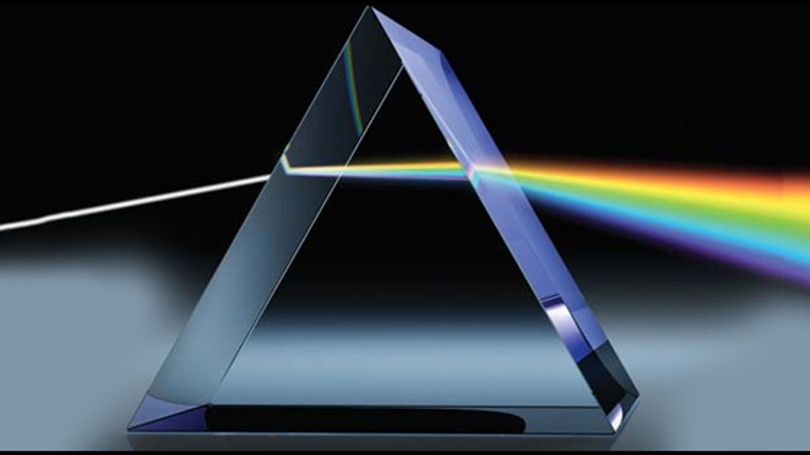
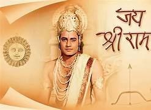
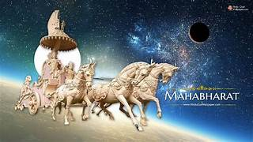

Educational Subjects
Science
Topic 1: Ray Optics

- Ray optics, also known as geometric optics, is a branch of optics that describes the behavior of light using rays, which are imaginary lines that represent the path of light as it travels through a medium. In ray optics, light is treated as a collection of individual rays that propagate in straight lines until they encounter a boundary or optical element. This simplified approach is highly effective for analyzing the behavior of light in many practical situations, such as reflection, refraction, and image formation. Reflection occurs when light rays bounce off a surface, obeying the law of reflection which states that the angle of incidence is equal to the angle of reflection. Refraction, on the other hand, occurs when light rays pass from one medium to another, causing a change in direction due to a difference in optical density. Snell's law governs the behavior of light during refraction, relating the angles of incidence and refraction to the refractive indices of the two media.
Topic 2: DNA
- DNA, or deoxyribonucleic acid, is a molecule that contains the genetic instructions for the development, functioning, growth, and reproduction of all known living organisms and many viruses. Structurally, DNA is composed of two long strands arranged in a double helix, with each strand made up of nucleotides. These nucleotides consist of a sugar-phosphate backbone and four nitrogenous bases: adenine (A), thymine (T), cytosine (C), and guanine (G). The arrangement of these bases along the DNA strands forms the genetic code, which determines an organism's traits and characteristics. The sequence of bases in DNA is highly specific and unique to each individual, providing a blueprint for the synthesis of proteins and the regulation of cellular processes
History
Topic 1: History Of Ramleela

- Ramleela, also known as Ramayana or Ramayan, is a cultural and religious performance that recounts the epic story of Lord Rama, his wife Sita, and his loyal devotee Hanuman, as depicted in the ancient Indian epic, the Ramayana. The tradition of Ramleela dates back centuries and is deeply rooted in Hindu mythology and spirituality. It is believed to have originated in the Indian subcontinent, where it was initially performed by traveling theater groups or in village communities during religious festivals, particularly during the auspicious occasion of Diwali, the festival of lights. Over time, Ramleela evolved into a highly elaborate and theatrical production, featuring vibrant costumes, elaborate sets, and live music and dance performances. The story of Ramleela revolves around the life and adventures of Lord Rama, the seventh incarnation of the Hindu god Vishnu, who is exiled from his kingdom of Ayodhya and embarks on a journey to rescue his wife Sita from the demon king Ravana. Along the way, Rama encounters various challenges, battles demons and adversaries, and ultimately triumphs over evil with the help of his loyal allies, including his devoted brother Lakshmana and the monkey god Hanuman. Ramleela is not just a form of entertainment but also serves as a means of imparting moral and spiritual teachings, promoting virtues such as righteousness, devotion, and the triumph of good over evil.
Topic 2: History Of Mahabharat

-
The Mahabharata is one of the two major ancient Indian epics, along with the Ramayana, and is revered as one of the longest and most significant texts in world literature. Composed in Sanskrit, the Mahabharata is believed to have been written over thousands of years ago, with its origins dating back to the Vedic period in ancient India. The epic is attributed to the sage Vyasa and is structured as a narrative poem that spans over 100,000 verses. At its core, the Mahabharata recounts the dynastic struggle for power and righteousness between two rival factions, the Pandavas and the Kauravas, who are cousins and descendants of the Kuru dynasty. The central conflict culminates in the great Kurukshetra War, a cataclysmic battle fought on the plains of Kurukshetra, in which the Pandavas emerge victorious, albeit at great cost. Alongside the epic battles and political intrigue, the Mahabharata also delves into profound philosophical and ethical questions, exploring themes such as duty (dharma), morality, justice, and the nature of human existence. The characters in the Mahabharata are complex and multidimensional, ranging from noble heroes like Arjuna and Yudhishthira to morally ambiguous figures like Karna and Bhishma. The epic also includes the Bhagavad Gita, a sacred text within the Mahabharata that presents a philosophical dialogue between Prince Arjuna and the god Krishna, who serves as his charioteer.